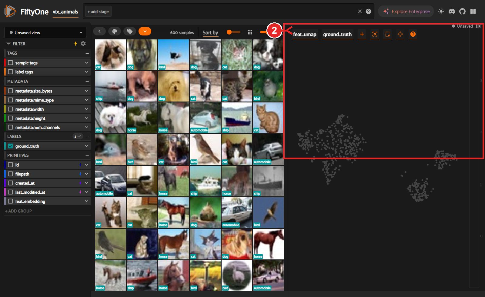
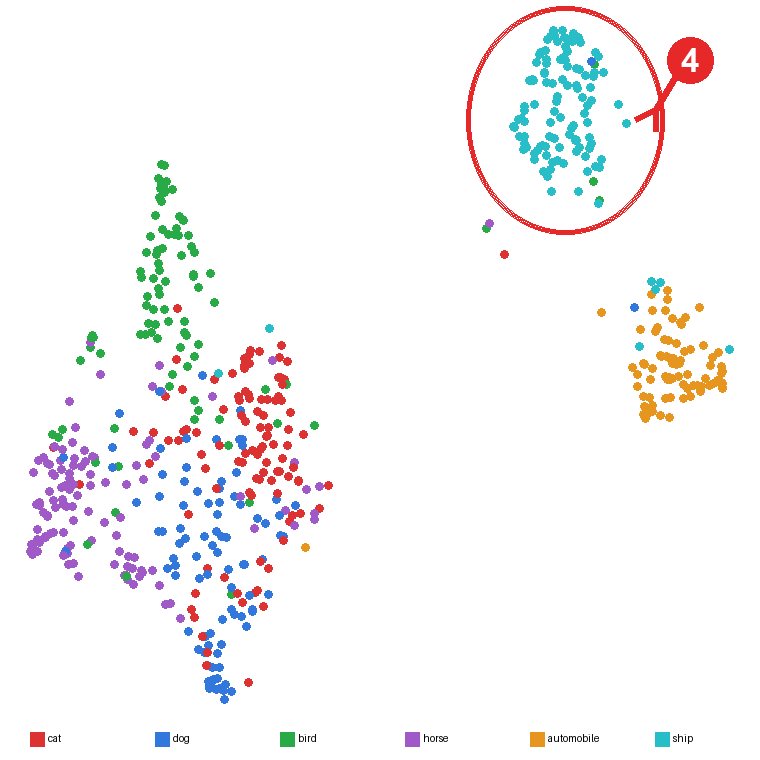
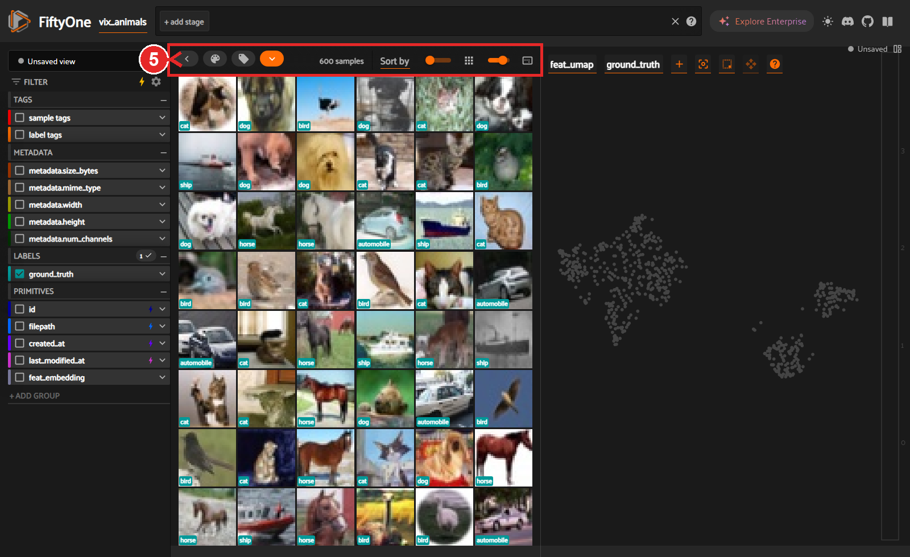
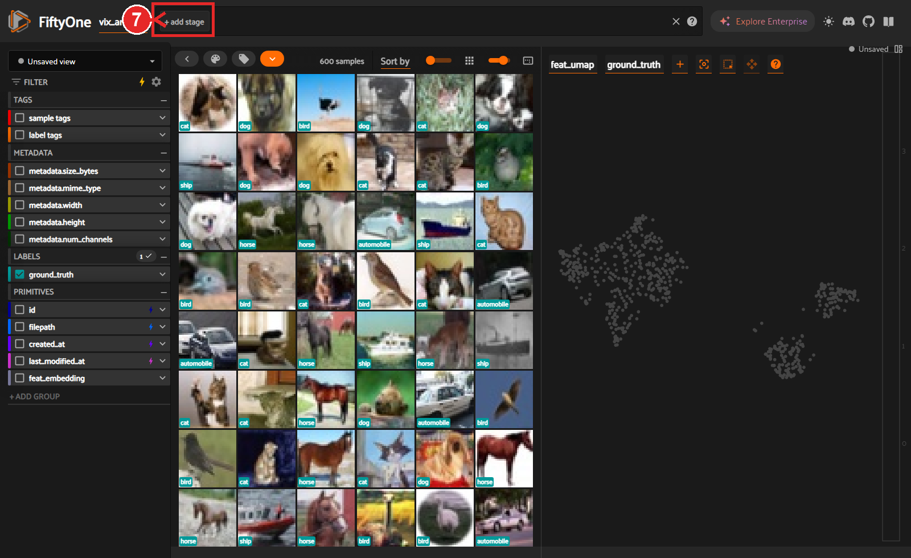

用 Embeddings 看影像分群 — 逐步圖解
資料集:vix_animals(600 張:貓 / 狗 / 鳥 / 馬 / 船 / 汽車)。先確認 App 在跑:瀏覽器開 http://localhost:5151。紅框 / 紅圈 / 紅色數字就是你每一步要點的地方。
0先看懂你要看的東西
下面這張是 vix_animals 的特徵地圖(UMAP 降維),每個點 = 一張圖,顏色 = 類別。 可以看到 船(青)、汽車(橘) 各自獨立成團,鳥(綠)、馬(紫) 分得很清楚, 貓(紅)、狗(藍) 相鄰且部分重疊(因為視覺特徵最像)。這就是「分群」。

1切換到 vix_animals 資料集
點左上角的資料集名稱(紅框)會跳出下拉,選 vix_animals。
最快的方法:直接把網址改成 http://localhost:5151/datasets/vix_animals 按 Enter。
⚠️ 如果你看到的是黑白方塊圖,代表停在舊的 vix_verify 測試資料集,照這步切過來就對了。

2打開 Embeddings 面板
畫面右半邊那塊點雲(紅框)就是 Embeddings 面板。
如果你的畫面只有左邊格狀、沒有右邊這塊:點格狀上方 Samples 分頁旁邊的 ＋(New panel)→ 選單裡點 Embeddings。

3設定面板:選地圖 + 上色
面板右上有兩個下拉(紅框):
· 左邊選 feat_umap → 要顯示哪一份降維地圖。
· 右邊 Color by 選 ground_truth → 依類別上色。
設好之後,點雲就會像步驟 0 那樣依類別分群、上色。

4框選一群(套索)
把滑鼠移到點雲上,右上角會浮出一排小工具;點選「套索 Lasso」工具, 然後在地圖上按住滑鼠拖曳,圈住你想看的一團(下圖紅圈示意:圈住右上角那團)。放開滑鼠就完成選取。
💡 想看哪一團就圈哪一團:可以圈「兩類重疊處」找容易混淆的、或圈「遠離大家的孤點」找異常樣本。

5只顯示選取的影像
框完之後,中間格狀上方的工具列(紅框)會出現「N selected」(N = 你圈到的張數)和一個小選單。 點那個選單 → 選「Only show selected samples(只顯示選取)」。

6看這群到底是什麼影像
格狀現在只剩你圈的那群。此例圈到的是「船」那一團:
· 每張縮圖左下角的標籤就是它的類別。
· 想看組成:左側 FILTER 欄展開 ground_truth,會列出這群各類別的張數。
· 點任一縮圖放大,看大圖與所有欄位值。
🔎 真實發現:這團 112 張裡 94% 是船,但混進了幾隻鳥 / 貓 / 狗 / 馬 —— 它們的特徵「長得像船」(多半是大片水面 / 海邊背景),正是最該優先人工覆核的可疑樣本。

7看完還原
要回到全部 600 張:點上方 view bar 左邊的「＋ add stage」區(紅框)旁、或最右邊的 ✕ 清掉篩選; 也可以在步驟 5 那個選單裡點「Clear selection(清除選取)」。
